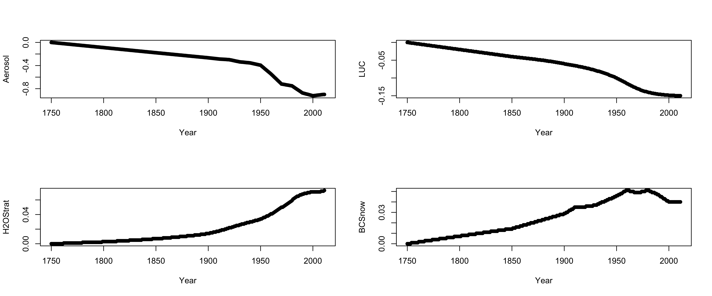
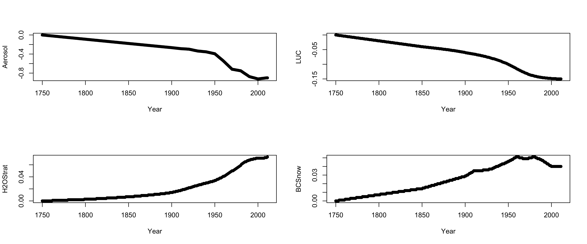
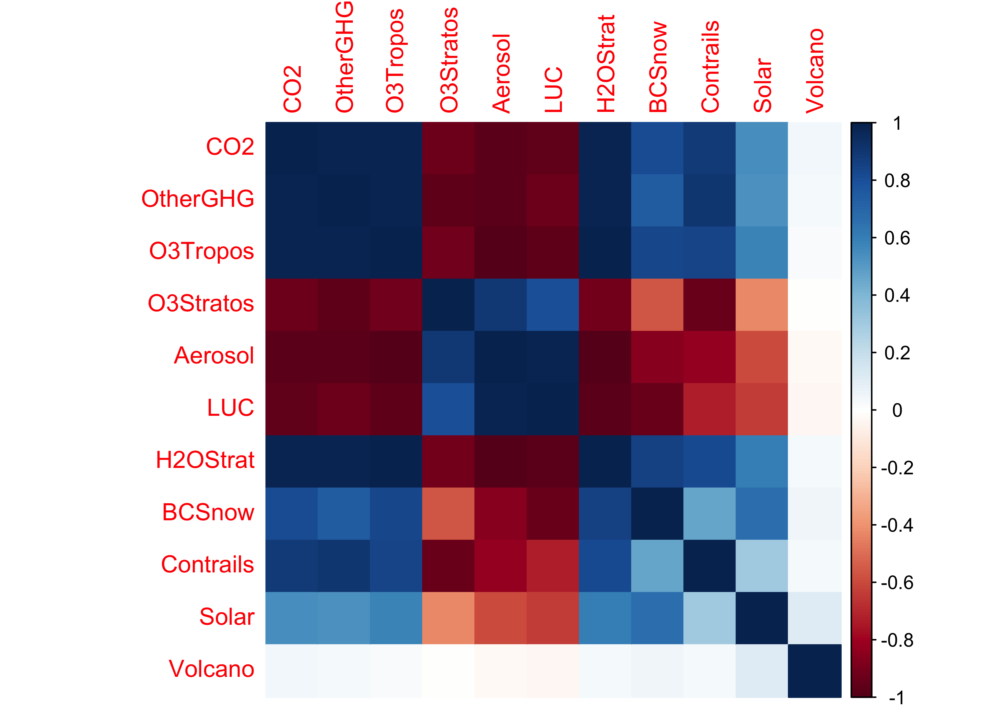
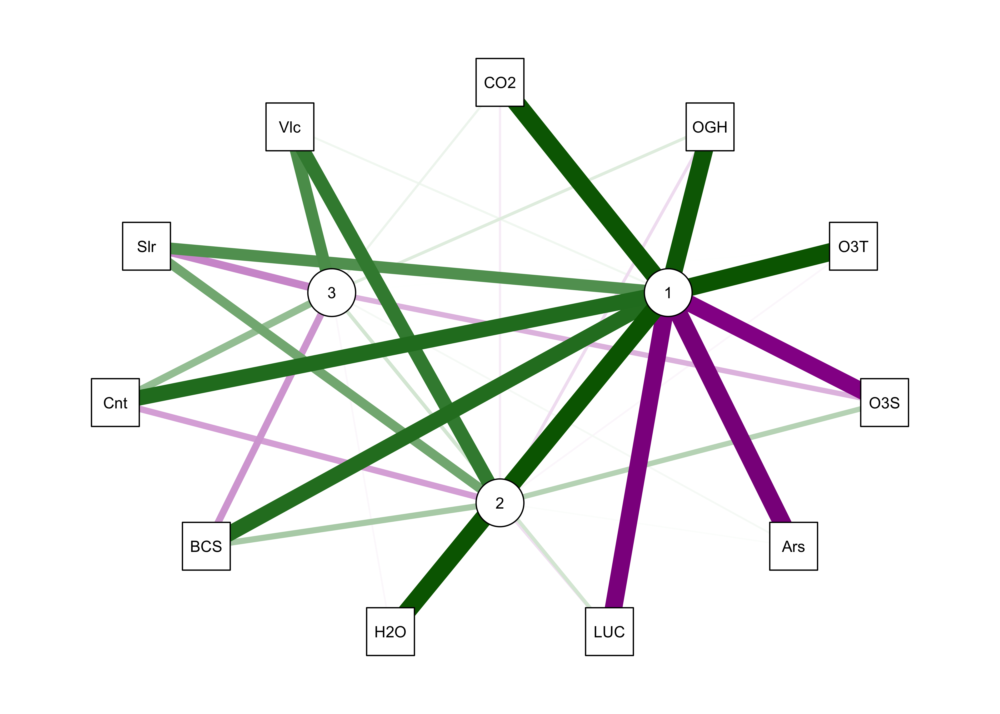
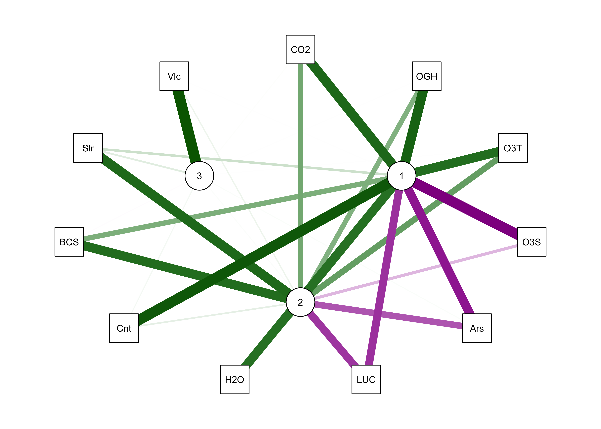

Principal components and factor analysis
NOTE: Not yet revised for Spring 2020
1 Introduction
Principal components analysis (PCA) is a widely used multivariate analysis method, the general aim of which is to reveal systematic covariations among a group of variables. The analysis can be motivated in a number of different ways, including (in geographical contexts) finding groups of variables that measure the same underlying dimensions of a data set, describing the basic anomaly patterns that appear in spatial data sets, or producing a general index of the common variation of a set of variables.
- Example: Davis’ boxes (data, plot, scatter, components), (Davis, J.C., 2001, Statistics and Data Analysis in Geology, Wiley)
- Derivation of principal components
{kind=link}
{kind=link}
{kind=link}
{kind=link}
2 Properties of principal components
Because the components are derived by solving a particular optimization problem, they naturally have some “built-in” properties that are desirable in practice (e.g. maximum variability). In addition, there are a number of other properties of the components that can be derived:
- variances of each component, and the proportion of the total variance of the original variables are are given by the eigenvalues;
- component scores may be calculated, that illustrate the value of each component at each observation;
- component loadings that describe the correlation between each component and each variable may also be obtained;
- the correlations among the original variables can be reproduced by the p-components, as can that part of the correlations “explained” by the first q components.
- the original data can be reproduced by the p components, as can those parts of the original data “explained” by the first q components;
- the components can be “rotated” to increase the interpretability of the components.
3 PCA Examples
3.1 PCA of a two-variable matrix
A very simple, two-variable analysis can be illustrated using Davis’ boxes data [boxes.csv]
In this example, a simple two-variable (long-axis length and diagonal length) data set is created using Davis’ artificial data.
# boxes.pca -- principal components analysis of Davis boxes data
boxes.matrix <- data.matrix(cbind(boxes[,1],boxes[,4]))
dimnames(boxes.matrix) <- list(NULL, cbind("long","diag"))Matrix scatter plot of the data (which in this case is a single panel), and the correlation matrix:

## long diag
## long 1.0000000 0.9112586
## diag 0.9112586 1.0000000PCA using the princomp() function from the stats package. The loadings() function extracts the loadings or the correlations between the input variables and the new components, and the the biplot() function creates a biplot a single figure that plots the loadings as vectors and the component scores as points represented by the observation numbers.
## Call:
## princomp(x = boxes.matrix, cor = T)
##
## Standard deviations:
## Comp.1 Comp.2
## 1.382483 0.297895
##
## 2 variables and 25 observations.## Importance of components:
## Comp.1 Comp.2
## Standard deviation 1.3824828 0.2978950
## Proportion of Variance 0.9556293 0.0443707
## Cumulative Proportion 0.9556293 1.0000000##
## Loadings:
## Comp.1 Comp.2
## long 0.707 0.707
## diag 0.707 -0.707
##
## Comp.1 Comp.2
## SS loadings 1.0 1.0
## Proportion Var 0.5 0.5
## Cumulative Var 0.5 1.0
Note the angle between the vectors–the correlation between two variables is equal to the cosine of the angle between the vectors (θ), or r = cos(θ). Here the angle is 24.3201359, which is found by the following R code: acos(cor(boxes.matrix[,1],boxes.matrix[,2]))/((2*pi)/360).
The components can be drawn on the scatter plot as follows,
# get parameters of component lines (after Everitt & Rabe-Hesketh)
load <- boxes.pca$loadings
slope <- load[2,]/load[1,]
mn <- apply(boxes.matrix,2,mean)
intcpt <- mn[2]-(slope*mn[1])
# scatter plot with the two new axes added
par(pty="s") # square plotting frame
xlim <- range(boxes.matrix) # overall min, max
plot(boxes.matrix, xlim=xlim, ylim=xlim, pch=16, col="purple") # both axes same length
abline(intcpt[1],slope[1],lwd=2) # first component solid line
abline(intcpt[2],slope[2],lwd=2,lty=2) # second component dashed
legend("right", legend = c("PC 1", "PC 2"), lty = c(1, 2), lwd = 2, cex = 1)
# projections of points onto PCA 1
y1 <- intcpt[1]+slope[1]*boxes.matrix[,1]
x1 <- (boxes.matrix[,2]-intcpt[1])/slope[1]
y2 <- (y1+boxes.matrix[,2])/2.0
x2 <- (x1+boxes.matrix[,1])/2.0
segments(boxes.matrix[,1],boxes.matrix[,2], x2, y2, lwd=2,col="purple")
This plot illustrates the idea of the first (or “principal” component) providing an optimal summary of the data–no other line drawn on this scatter plot would produce a set of projected values of the data points onto the line with less variance. The first component also has an application in reduced major axis (RMA) regression in which both x- and y-variables are assumed to have errors or uncertainties, or where there is no clear distinction between a predictor and a response.
3.2 A second example using the large-cites data set
A second example of a simple PCA analysis can be illustrated using the large-cities data set [cities.csv]
Create a data matrix that omits the city names and look at the data and the correlation matrix.
cities.matrix <- data.matrix(cities[,2:12])
rownames(cities.matrix) <- cities[,1] # add city names as row labels3.2.1 Examining the correlation matrix

## Area Pop.1980 Pop.1990 Pop.2000 Growth Food PersRoom Water
## Area 1.0000000 0.1776504 0.1482707 0.0811688 -0.3106659 -0.2277181 -0.5172160 0.2941461
## Pop.1980 0.1776504 1.0000000 0.9559486 0.7919490 -0.6935458 -0.5209447 -0.5664580 0.6213565
## Pop.1990 0.1482707 0.9559486 1.0000000 0.9233506 -0.4888987 -0.4080286 -0.4612457 0.5995832
## Pop.2000 0.0811688 0.7919490 0.9233506 1.0000000 -0.1720913 -0.1386787 -0.1876411 0.4545814
## Growth -0.3106659 -0.6935458 -0.4888987 -0.1720913 1.0000000 0.5607890 0.6711674 -0.5594034
## Food -0.2277181 -0.5209447 -0.4080286 -0.1386787 0.5607890 1.0000000 0.6016164 -0.5047112
## PersRoom -0.5172160 -0.5664580 -0.4612457 -0.1876411 0.6711674 0.6016164 1.0000000 -0.6643779
## Water 0.2941461 0.6213565 0.5995832 0.4545814 -0.5594034 -0.5047112 -0.6643779 1.0000000
## Elec 0.2793523 0.4811426 0.4337657 0.2333170 -0.4730705 -0.6207611 -0.7934353 0.8304116
## Phones 0.1393848 0.6734610 0.5870475 0.3669274 -0.5402193 -0.8429700 -0.5926469 0.5512366
## Vehicles 0.4117518 0.4179417 0.4191265 0.2430040 -0.3214298 -0.7610807 -0.5537093 0.4163189
## Elec Phones Vehicles
## Area 0.2793523 0.1393848 0.4117518
## Pop.1980 0.4811426 0.6734610 0.4179417
## Pop.1990 0.4337657 0.5870475 0.4191265
## Pop.2000 0.2333170 0.3669274 0.2430040
## Growth -0.4730705 -0.5402193 -0.3214298
## Food -0.6207611 -0.8429700 -0.7610807
## PersRoom -0.7934353 -0.5926469 -0.5537093
## Water 0.8304116 0.5512366 0.4163189
## Elec 1.0000000 0.5180646 0.5019066
## Phones 0.5180646 1.0000000 0.6303538
## Vehicles 0.5019066 0.6303538 1.0000000Matrix scatter plots, particularly those for a data set with a large number of variables are some times difficult to interpret. Two alternative plots are available: 1) a generalized depiction of the correlation matrix using the corrplot() function, and 2) a plot of the correlations as a network of links (“edges”) between variables (“nodes”) provided by the qgraph() function in the package of the same name.
The corrplot() function displays the correlation matrix using a set of little ellipses that provide a generalized dipiction of the strength and sign of a correlation.
## corrplot 0.84 loaded
An alternative is simply fill each cell with an appropriate color and shade.

Rectangular areas of similar sign and magnitude of the correlation identify groups of variables that tend to covary together across the observations. For example, the three population variables are postively correlated with one another, and are inversely correlated with Growth, Food and PersRoom.
Another way of depicting the correlations is as a network of line segments, which are drawn to illustrate the strength and sign of the correlations between each pair of variables.
## Registered S3 methods overwritten by 'huge':
## method from
## plot.sim BDgraph
## print.sim BDgraph
Note that in the above plot, the variable names are abbreviated using just three characters. Most of the time this is enough.
A modification of the basic qgraph() plot involves arranging the nodes in a way that locates more highly correlated variables closer to one another (a “force-embedded” layout, specified by the layout="spring" argument. The sign of the correlations are indicated by color: positive correlations are green, negative magenta (or red).

3.2.2 PCA of the cities data
Here’s the principal components analysis of the cities data:
## Call:
## princomp(x = cities.matrix, cor = T)
##
## Standard deviations:
## Comp.1 Comp.2 Comp.3 Comp.4 Comp.5 Comp.6 Comp.7 Comp.8 Comp.9
## 2.46294201 1.31515696 1.00246883 0.92086602 0.83523273 0.50012846 0.48128911 0.35702153 0.17468753
## Comp.10 Comp.11
## 0.10314352 0.05779932
##
## 11 variables and 21 observations.## Importance of components:
## Comp.1 Comp.2 Comp.3 Comp.4 Comp.5 Comp.6 Comp.7
## Standard deviation 2.4629420 1.3151570 1.00246883 0.92086602 0.83523273 0.50012846 0.48128911
## Proportion of Variance 0.5514621 0.1572398 0.09135852 0.07709038 0.06341943 0.02273895 0.02105811
## Cumulative Proportion 0.5514621 0.7087019 0.80006045 0.87715083 0.94057026 0.96330921 0.98436732
## Comp.8 Comp.9 Comp.10 Comp.11
## Standard deviation 0.35702153 0.174687526 0.1031435150 0.0577993220
## Proportion of Variance 0.01158767 0.002774157 0.0009671441 0.0003037056
## Cumulative Proportion 0.99595499 0.998729150 0.9996962944 1.0000000000
##
## Loadings:
## Comp.1 Comp.2 Comp.3 Comp.4 Comp.5 Comp.6 Comp.7 Comp.8 Comp.9 Comp.10 Comp.11
## Area 0.160 0.299 0.603 0.569 0.141 0.326 0.131 0.195 0.106
## Pop.1980 0.350 -0.340 0.248 -0.123 0.130 0.158 0.677 -0.428
## Pop.1990 0.324 -0.445 0.104 -0.145 0.804
## Pop.2000 0.229 -0.586 0.109 0.228 -0.190 -0.114 -0.571 -0.393
## Growth -0.295 -0.115 0.310 -0.682 0.388 -0.152 0.389
## Food -0.316 -0.263 0.456 -0.167 -0.574 0.502
## PersRoom -0.332 -0.270 -0.241 0.116 0.544 -0.449 0.254 0.417
## Water 0.330 0.229 -0.331 -0.357 0.533 -0.252 -0.376 -0.291 0.169
## Elec 0.315 0.214 0.132 -0.345 -0.483 -0.183 0.414 0.517 -0.111
## Phones 0.331 -0.447 0.364 0.571 -0.291 0.352
## Vehicles 0.282 0.232 -0.272 0.519 -0.209 -0.288 -0.481 -0.372 0.152
##
## Comp.1 Comp.2 Comp.3 Comp.4 Comp.5 Comp.6 Comp.7 Comp.8 Comp.9 Comp.10 Comp.11
## SS loadings 1.000 1.000 1.000 1.000 1.000 1.000 1.000 1.000 1.000 1.000 1.000
## Proportion Var 0.091 0.091 0.091 0.091 0.091 0.091 0.091 0.091 0.091 0.091 0.091
## Cumulative Var 0.091 0.182 0.273 0.364 0.455 0.545 0.636 0.727 0.818 0.909 1.000
In this case, there were two “important components” and a third that was pretty important, as evidenced by the break in slope of the “screeplot”. The biplot diplays both the loadings (correlations between the original variables and the components) as lablelled vectors, and the component scores as either symbols, or as here when the matrix has rownames, as labels.
The biplot and table of component loadings indicate that the first component includes variables that (more-or-less) trade off developed-world cities against developing-world ones. (Note the opposing directions of the vectors that are sub-parallel to the x-axis.) The second component (population) is noted by vectors and loadings that are (more-or-less) at right angles to the first set, and sub-parallel to the y-axis. (But note that the vector for Pop.1980 is actually more parallel to the x-axis than the y.)
An alternative visualization of the principal component and their relationship with the original variables is provided by the qgraph() function. The qgraph.pca() function does the analyis creates a “default” (circle) plot layout, and the various arguments of the qgraph() function create a more informative plot. The original variables are indicted by three-character abbreviations, and the components by numbered nodes.
#qg.pca <- qgraph.pca(cities[,2:12], factors=2, rotation="none") -- qgraph.pca() does not work for qgraph >= 1.6
#qgraph(qg.pca, posCol="darkgreen", layout="spring", negCol="darkmagenta", edge.width=2, arrows=FALSE)
# workaround
cities.pca.loadings <- loadings(cities.pca)
qgraph.loadings(cities.pca.loadings[,1:2], posCol="darkgreen", layout="circle", negCol="darkmagenta", edge.width=1)
3.3 “Rotation” of principal components
The interpretation of the components (which is governed by the loadings–the correlations of the original varialbles with the newly created components) can be enhanced by “rotation” which could be thought of a set of coordinated adjustments of the vectors on a biplot. There is not single optimal way of doing rotations, but probably the most common approach is “varimax” rotation in which the components are adjusted in a way that makes the loadings either high positive (or negative) or zero, while keeping the components uncorrelated or orthogonal. One side-product of rotation is that the first, or principal components is no longer optimal or the most efficient single-variable summary of the data set, but losing that property is often worth the incraese in interpretability. The principal() function in the psych package implements rotation of principal components.
Here’s the psych package version of a simple PCA:
## Principal Components Analysis
## Call: principal(r = cities.matrix, nfactors = 2, rotate = "none")
## Standardized loadings (pattern matrix) based upon correlation matrix
## PC1 PC2 h2 u2 com
## Area 0.39 -0.39 0.31 0.690 2.0
## Pop.1980 0.86 0.45 0.94 0.056 1.5
## Pop.1990 0.80 0.59 0.98 0.019 1.8
## Pop.2000 0.56 0.77 0.91 0.087 1.8
## Growth -0.73 0.13 0.54 0.457 1.1
## Food -0.78 0.35 0.73 0.273 1.4
## PersRoom -0.82 0.35 0.80 0.205 1.4
## Water 0.81 -0.01 0.66 0.341 1.0
## Elec 0.77 -0.28 0.68 0.320 1.3
## Phones 0.82 -0.05 0.67 0.332 1.0
## Vehicles 0.69 -0.30 0.57 0.426 1.4
##
## PC1 PC2
## SS loadings 6.07 1.73
## Proportion Var 0.55 0.16
## Cumulative Var 0.55 0.71
## Proportion Explained 0.78 0.22
## Cumulative Proportion 0.78 1.00
##
## Mean item complexity = 1.4
## Test of the hypothesis that 2 components are sufficient.
##
## The root mean square of the residuals (RMSR) is 0.1
## with the empirical chi square 21.58 with prob < 0.95
##
## Fit based upon off diagonal values = 0.97##
## Factor analysis with Call: principal(r = cities.matrix, nfactors = 2, rotate = "none")
##
## Test of the hypothesis that 2 factors are sufficient.
## The degrees of freedom for the model is 34 and the objective function was 6.87
## The number of observations was 21 with Chi Square = 97.36 with prob < 5e-08
##
## The root mean square of the residuals (RMSA) is 0.1
… and the qgraph() plot of the results:
cities.pca.unrot.loadings <- loadings(cities.pca.unrot)
qgraph.loadings(cities.pca.unrot.loadings[,1:2], posCol="darkgreen", layout="circle", negCol="darkmagenta", edge.width=1)
Note the location and linkages of Pop.1980 in the plot. Here’s the result with rotated components:
## Principal Components Analysis
## Call: principal(r = cities.matrix, nfactors = 2, rotate = "varimax")
## Standardized loadings (pattern matrix) based upon correlation matrix
## RC1 RC2 h2 u2 com
## Area 0.55 -0.07 0.31 0.690 1.0
## Pop.1980 0.41 0.88 0.94 0.056 1.4
## Pop.1990 0.28 0.95 0.98 0.019 1.2
## Pop.2000 -0.02 0.96 0.91 0.087 1.0
## Growth -0.65 -0.34 0.54 0.457 1.5
## Food -0.83 -0.20 0.73 0.273 1.1
## PersRoom -0.87 -0.22 0.80 0.205 1.1
## Water 0.65 0.49 0.66 0.341 1.9
## Elec 0.79 0.25 0.68 0.320 1.2
## Phones 0.68 0.45 0.67 0.332 1.7
## Vehicles 0.74 0.18 0.57 0.426 1.1
##
## RC1 RC2
## SS loadings 4.46 3.33
## Proportion Var 0.41 0.30
## Cumulative Var 0.41 0.71
## Proportion Explained 0.57 0.43
## Cumulative Proportion 0.57 1.00
##
## Mean item complexity = 1.3
## Test of the hypothesis that 2 components are sufficient.
##
## The root mean square of the residuals (RMSR) is 0.1
## with the empirical chi square 21.58 with prob < 0.95
##
## Fit based upon off diagonal values = 0.97##
## Factor analysis with Call: principal(r = cities.matrix, nfactors = 2, rotate = "varimax")
##
## Test of the hypothesis that 2 factors are sufficient.
## The degrees of freedom for the model is 34 and the objective function was 6.87
## The number of observations was 21 with Chi Square = 97.36 with prob < 5e-08
##
## The root mean square of the residuals (RMSA) is 0.1biplot.psych(cities.pca.rot, labels=rownames(cities.matrix), col=c("black","red"), cex=c(0.7,0.8),
xlim.s=c(-3,3), ylim.s=c(-2,4)) … and the
… and the qgraph() plot of the rotated-component results:
# qg.pca <- qgraph(cities.pca.rot) qgraph.pca() does not work for qgraph >= 1.6
# qgraph(qg.pca, posCol="darkgreen", layout="spring", negCol="darkmagenta", edge.width=2, arrows=FALSE)
# workaround
cities.pca.rot.loadings <- loadings(cities.pca.rot)
qgraph.loadings(cities.pca.rot.loadings[,1:2], posCol="darkgreen", layout="circle", negCol="darkmagenta", edge.width=1)
Notice that now all three population variables are “most highly loaded on” the second component.
4 Factor analyis (FA) and PCA
Factor analysis (FA) can be thought of as a parallel analysis, and in some ways PCA and be viewed as a special case of FA. Despite their names being used indiscriminantly, the two alaysis do have differing underlying models:
- PCA: maximum variance, maximum simultaneous resemblance motivations
- Factor Analysis: variables are assembled from two major components common “factors” and “unique” factors, e.g. X = m + Lf + u, where X is a maxrix of data, m is the (vector) mean of the variables, L is a p x k matrix of factor loadings f and u are random vectors representing the underlying common and unique factors.
The model underlying factor analysis is:
data = common factors + unique factors
The common factors in factor analysis are much like the first few principal components, and are often defined that way in initial phases of the analysis.
The practical difference between the two analyses now lies mainly in the decision whether to rotate the principal components to emphasize the “simple structure” of the component loadings:
- easier interpretation
- in geographical data: regionalization
4.1 Example of a factor analysis
Here’s a factor analysis of the large-cities data set using the factanal() function:
# cities.fa1 -- factor analysis of cities data -- no rotation
cities.fa1 <- factanal(cities.matrix, factors=2, rotation="none", scores="regression")
cities.fa1##
## Call:
## factanal(x = cities.matrix, factors = 2, scores = "regression", rotation = "none")
##
## Uniquenesses:
## Area Pop.1980 Pop.1990 Pop.2000 Growth Food PersRoom Water Elec Phones Vehicles
## 0.933 0.022 0.005 0.005 0.179 0.437 0.387 0.541 0.605 0.426 0.706
##
## Loadings:
## Factor1 Factor2
## Area 0.129 0.225
## Pop.1980 0.914 0.377
## Pop.1990 0.988 0.136
## Pop.2000 0.967 -0.243
## Growth -0.386 -0.820
## Food -0.316 -0.681
## PersRoom -0.368 -0.691
## Water 0.558 0.384
## Elec 0.366 0.510
## Phones 0.518 0.553
## Vehicles 0.356 0.409
##
## Factor1 Factor2
## SS loadings 3.989 2.766
## Proportion Var 0.363 0.251
## Cumulative Var 0.363 0.614
##
## Test of the hypothesis that 2 factors are sufficient.
## The chi square statistic is 83.44 on 34 degrees of freedom.
## The p-value is 4.86e-06
Notice that the biplot looks much the same as that for PCA (as to the loadings, which have the same interpretation–as correlations between the factors and the original variables). A new element of the factor analysis output is the “Uniquenesses” table, which, as it says, describes the uniqueness of individual variables, where values near 1.0 indicate variables that are tending to measure unique properties in the data set, while values near 0.0 indicate variables that are duplicated in a sense by other variables in the data set.
Here’s the qgraph plot:
library(qgraph)
# qg.fa1 <- qgraph(cities.fa1) qgraph.pca() does not work for qgraph >= 1.6
# qgraph(qg.fa1, posCol="darkgreen", layout="spring", negCol="darkmagenta", edge.width=2, arrows=FALSE)
# workaround
cities.fa1.loadings <- loadings(cities.fa1)
qgraph.loadings(cities.fa1.loadings[,1:2], posCol="darkgreen", layout="circle", negCol="darkmagenta", edge.width=1)
Note the “external” line segments that are scaled to the uniqueness values of each variable, and represent sources of variability extraneous to (or outside of) that generated by the factors.
Here is a “rotated” factor analysis:
# cities.fa2 -- factor analysis of cities data -- varimax rotation
cities.fa2 <- factanal(cities.matrix, factors=2, rotation="varimax", scores="regression")
cities.fa2##
## Call:
## factanal(x = cities.matrix, factors = 2, scores = "regression", rotation = "varimax")
##
## Uniquenesses:
## Area Pop.1980 Pop.1990 Pop.2000 Growth Food PersRoom Water Elec Phones Vehicles
## 0.933 0.022 0.005 0.005 0.179 0.437 0.387 0.541 0.605 0.426 0.706
##
## Loadings:
## Factor1 Factor2
## Area 0.251
## Pop.1980 0.602 0.784
## Pop.1990 0.389 0.919
## Pop.2000 0.997
## Growth -0.892 -0.159
## Food -0.740 -0.127
## PersRoom -0.763 -0.175
## Water 0.516 0.439
## Elec 0.588 0.221
## Phones 0.669 0.356
## Vehicles 0.488 0.237
##
## Factor1 Factor2
## SS loadings 3.801 2.954
## Proportion Var 0.346 0.269
## Cumulative Var 0.346 0.614
##
## Test of the hypothesis that 2 factors are sufficient.
## The chi square statistic is 83.44 on 34 degrees of freedom.
## The p-value is 4.86e-06
… and the qgraph plot:
library(qgraph)
# qg.fa2 <- qgraph(cities.fa2)
# qgraph(qg.fa2, posCol="darkgreen", layout="spring", negCol="darkmagenta", edge.width=2, arrows=FALSE)
# workaround
cities.fa2.loadings <- loadings(cities.fa2)
qgraph.loadings(cities.fa2.loadings[,1:2], posCol="darkgreen", layout="circle", negCol="darkmagenta", edge.width=1)
5 Another PCA Example
Another example of the application of PCA can be illustrated using a set of time series of “radiative forcing” variables extracted from the IPCC AR5 WG1 volume. The individual series, all in units of Wm-2 show the impact since 1750 of both natural and anthropogenic (human) perturbations of the Earth’s energy balance, and an interesting question is “how many distinct temporal patterns are there in these data”?
Several of the variables have distinctly non-normal distributions, and so all were transformed before the analyses below using the variance-stabilizing Box-Cox transformation. (Note to AGW contrarians: This is a teaching example using an interesting data set, and not whatsoever a data analysis intending to prove or disprove anything–we’re way past time for that…)
Here are some simple time-series plots, which are dominated by various versions of the “hockey-stick” curve.
 

Here is a corrplot() display, which has considerable rectagular patterning in it, reflecting the similarity in the trends of many of the individual variables.
RFtrans.matrix <- RF[2:12]
rownames(RFtrans.matrix) <- RF[,1]
corrplot(cor(RFtrans.matrix), method="color")
A qgraph() plots can be produced as follows:

Simple inspection of this plot suggests that there are two variables, the radiative forcing by volcanos (Volcanos/Vlc) and solar irradiance variations (Solar/Slr) that vary more independently of the others, and of these two variables, radiative forcing by volcanos are the most independent.
Here’s the PCA, as implemented in the psych package:
## Principal Components Analysis
## Call: principal(r = RFtrans.matrix, nfactors = 3, rotate = "none")
## Standardized loadings (pattern matrix) based upon correlation matrix
## PC1 PC2 PC3 h2 u2 com
## CO2 0.99 -0.06 0.06 0.99 0.0118 1.0
## OtherGHG 0.99 -0.11 0.11 0.99 0.0052 1.0
## O3Tropos 1.00 -0.03 0.00 0.99 0.0054 1.0
## O3Stratos -0.91 0.24 -0.24 0.95 0.0460 1.3
## Aerosol -0.99 0.01 0.03 0.99 0.0135 1.0
## LUC -0.97 -0.10 0.14 0.97 0.0264 1.1
## H2OStrat 1.00 0.00 -0.02 0.99 0.0075 1.0
## BCSnow 0.84 0.29 -0.34 0.91 0.0949 1.6
## Contrails 0.85 -0.30 0.36 0.95 0.0542 1.6
## Solar 0.62 0.49 -0.40 0.78 0.2166 2.7
## Volcano 0.05 0.76 0.65 1.00 0.0033 2.0
##
## PC1 PC2 PC3
## SS loadings 8.52 1.08 0.92
## Proportion Var 0.77 0.10 0.08
## Cumulative Var 0.77 0.87 0.96
## Proportion Explained 0.81 0.10 0.09
## Cumulative Proportion 0.81 0.91 1.00
##
## Mean item complexity = 1.4
## Test of the hypothesis that 3 components are sufficient.
##
## The root mean square of the residuals (RMSR) is 0.03
## with the empirical chi square 25.01 with prob < 0.46
##
## Fit based upon off diagonal values = 1##
## Factor analysis with Call: principal(r = RFtrans.matrix, nfactors = 3, rotate = "none")
##
## Test of the hypothesis that 3 factors are sufficient.
## The degrees of freedom for the model is 25 and the objective function was 10.19
## The number of observations was 262 with Chi Square = 2593.61 with prob < 0
##
## The root mean square of the residuals (RMSA) is 0.03
# qg.pca <- qgraph(RFtrans.pca) qgraph.pca() does not work for qgraph >= 1.6
# qgraph(qg.pca, layout="spring", posCol="darkgreen", negCol="darkmagenta", arrows=FALSE, edge.width=2)
# workaround
RFtrans.pca.loadings <- loadings(RFtrans.pca)
qgraph.loadings(RFtrans.pca.loadings[,1:3], posCol="darkgreen", layout="circle", negCol="darkmagenta", edge.width=1)
Inspection of the loadings, the biplot and the qgraph() plot each confirm that idea, but also show that solar is highly correlated with the first component. Try rotating the components:
# rotated
RFtrans.pca.rot <- principal(RFtrans.matrix, nfactors=3, rotate="varimax")
RFtrans.pca.rot## Principal Components Analysis
## Call: principal(r = RFtrans.matrix, nfactors = 3, rotate = "varimax")
## Standardized loadings (pattern matrix) based upon correlation matrix
## RC1 RC3 RC2 h2 u2 com
## CO2 0.87 0.48 0.01 0.99 0.0118 1.6
## OtherGHG 0.90 0.43 0.01 0.99 0.0052 1.4
## O3Tropos 0.84 0.54 -0.01 0.99 0.0054 1.7
## O3Stratos -0.95 -0.23 0.00 0.95 0.0460 1.1
## Aerosol -0.81 -0.57 0.01 0.99 0.0135 1.8
## LUC -0.71 -0.69 0.01 0.97 0.0264 2.0
## H2OStrat 0.82 0.57 0.00 0.99 0.0075 1.8
## BCSnow 0.45 0.84 -0.01 0.91 0.0949 1.5
## Contrails 0.97 0.08 0.03 0.95 0.0542 1.0
## Solar 0.16 0.86 0.10 0.78 0.2166 1.1
## Volcano 0.00 0.05 1.00 1.00 0.0033 1.0
##
## RC1 RC3 RC2
## SS loadings 6.16 3.34 1.01
## Proportion Var 0.56 0.30 0.09
## Cumulative Var 0.56 0.86 0.96
## Proportion Explained 0.59 0.32 0.10
## Cumulative Proportion 0.59 0.90 1.00
##
## Mean item complexity = 1.5
## Test of the hypothesis that 3 components are sufficient.
##
## The root mean square of the residuals (RMSR) is 0.03
## with the empirical chi square 25.01 with prob < 0.46
##
## Fit based upon off diagonal values = 1##
## Factor analysis with Call: principal(r = RFtrans.matrix, nfactors = 3, rotate = "varimax")
##
## Test of the hypothesis that 3 factors are sufficient.
## The degrees of freedom for the model is 25 and the objective function was 10.19
## The number of observations was 262 with Chi Square = 2593.61 with prob < 0
##
## The root mean square of the residuals (RMSA) is 0.03
#qg.pca.rot <- qgraph(RFtrans.pca.rot) qgraph.pca() does not work for qgraph >= 1.6
#qgraph(qg.pca.rot, layout="spring", posCol="darkgreen", negCol="darkmagenta", arrows=FALSE, #edge.width=2)
# workaround
RFtrans.pca.rot.loadings <- loadings(RFtrans.pca.rot)
qgraph.loadings(RFtrans.pca.rot.loadings[,1:3], posCol="darkgreen", layout="circle", negCol="darkmagenta", edge.width=1)
Rotation clearly sharpens the interpretation that there are three distinct components of the radiative forcing changes since 1750: 1) all of the anthropogenic forcing variables, varying in a coherent (hockey-stickish) fashion, which “explains” 72 percent of the total variability over time in these variables, followed by 2) solar and 3) volcanic forcing. The variance accounted for by the second and third components suggests that they are roughly similar in importance, and could easily switch places.
6 Readings
- Chapter 25, Multivariate Statistics, in Crawley, M.J. (2013) The R Book, Wiley. To get to the book, visit http://library.uoregon.edu, login, and search for the 2013 edition of the book. Here’s a direct link, once you’re logged on: http://onlinelibrary.wiley.com/book/10.1002/9781118448908
- Maindonald (Using R…): ch. 6, cex=c(0.7,0.8)